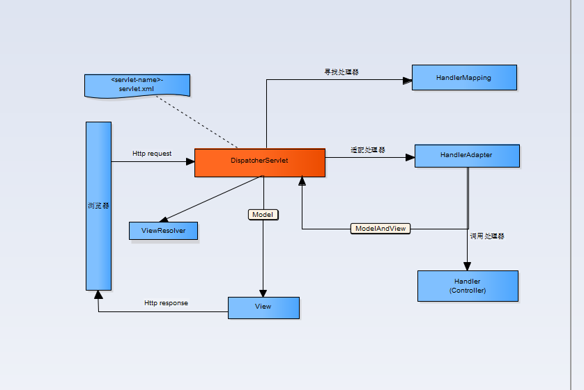

MVC即模型-视图-控制器（Model-View-Controller）
Spring Web MVC是一种基于Java的实现了Web MVC设计模式的请求驱动类型的轻量级Web框架，即使用了MVC架构模式的思想，将web层进行职责解耦，基于请求驱动指的就是使用请求-响应模型，框架的目的就是帮助我们简化开发，Spring Web MVC也是要简化我们日常Web开发的。

1). 客户端请求提交到DispatcherServlet
2). 由DispatcherServlet控制器查询一个或多个HandlerMapping，找到处理请求的Controller
3). DispatcherServlet将请求提交到Controller
4). Controller调用业务逻辑处理后，返回ModelAndView
5). DispatcherServlet查询一个或多个ViewResoler视图解析器，找到ModelAndView指定的视图
6). 视图负责将结果显示到客户端
@Controller负责注册一个bean到spring上下文中@RequestMapping 注解为控制器指定可以处理哪些 URL 请求@RequestBody 该注解用于读取Request请求的body部分数据，使用系统默认配置的HttpMessageConverter进行解析，然后把相应的数据绑定到要返回的对象上 ,再把HttpMessageConverter返回的对象数据绑定到 controller中方法的参数上@ResponseBody 该注解用于将Controller的方法返回的对象，通过适当的HttpMessageConverter转换为指定格式后，写入到Response对象的body数据区@ModelAttribute 在方法定义上使用 @ModelAttribute 注解：Spring MVC 在调用目标处理方法前，会先逐个调用在方法级上标注了@ModelAttribute 的方法，在方法的入参前使用 @ModelAttribute 注解：可以从隐含对象中获取隐含的模型数据中获取对象，再将请求参数 –绑定到对象中，再传入入参将方法入参对象添加到模型中@RequestParam 在处理方法入参处使用 @RequestParam 可以把请求参 数传递给请求方法@PathVariable 绑定 URL 占位符到入参@ExceptionHandler 注解到方法上，出现异常时会执行该方法@ControllerAdvice 使一个Contoller成为全局的异常处理类，类中用@ExceptionHandler方法注解的方法可以处理所有Controller发生的异常通过AbstractAnnotationConfigDispatcherServlet-Initializer来配置DispatcherServlet
import org.springframework.web.servlet.support.AbstractAnnotationConfigDispatcherServletInitializer;
public class SpitterWebInitializer extends AbstractAnnotationConfigDispatcherServletInitializer {
@Override
protected Class<?>[] getRootConfigClasses() {
return new Class<?>[] { RootConfig.class };
}
@Override
protected Class<?>[] getServletConfigClasses() {
return new Class<?>[] { WebConfig.class };
}
@Override
protected String[] getServletMappings() {
return new String[] { "/" };
}
}传统web.xml方式
<?xml version="1.0" encoding="UTF-8"?>
<web-app xmlns:xsi="http://www.w3.org/2001/XMLSchema-instance"
xmlns="http://java.sun.com/xml/ns/javaee" xmlns:web="http://java.sun.com/xml/ns/javaee/web-app_2_5.xsd"
xsi:schemaLocation="http://java.sun.com/xml/ns/javaee http://java.sun.com/xml/ns/javaee/web-app_2_5.xsd"
version="2.5">
<display-name>Springmvc</display-name>
<welcome-file-list>
<welcome-file>index.html</welcome-file>
</welcome-file-list>
<!--Spring监听器-->
<listener>
<listener-class>org.springframework.web.context.ContextLoaderListener</listener-class>
</listener>
<context-param>
<param-name>contextConfigLocation</param-name>
<param-value>classpath:applicationContext.xml</param-value>
</context-param>
<!--前端控制器-->
<servlet>
<servlet-name>springmvc</servlet-name>
<servlet-class>org.springframework.web.servlet.DispatcherServlet</servlet-class>
<!--默认找/resource/[servlet名称]-servlet.xml-->
<init-param>
<param-name>contextConfigLocation</param-name>
<param-value>classpath:springmvc.xml</param-value>
</init-param>
</servlet>
<servlet-mapping>
<servlet-name>springmvc</servlet-name>
<!--1./* 拦截所有请求 2. *.action *.do 拦截以.action .do 结尾的请求 3. / 拦截除.jsp以外请求-->
<url-pattern>/</url-pattern>
</servlet-mapping>
</web-app>@Configuration
@EnableWebMvc
@ComponentScan("com.fiberhome.tongl.spittr.web")
public class WebConfig extends WebMvcConfigurerAdapter {
@Bean
public ViewResolver viewResolver() {
InternalResourceViewResolver resolver = new InternalResourceViewResolver();
resolver.setPrefix("/WEB-INF/views/");
resolver.setSuffix(".jsp");
resolver.setViewClass(org.springframework.web.servlet.view.JstlView.class);
return resolver;
}
@Override
public void configureDefaultServletHandling(DefaultServletHandlerConfigurer configurer) {
configurer.enable();
}
}<?xml version="1.0" encoding="UTF-8"?>
<beans xmlns="http://www.springframework.org/schema/beans"
xmlns:xsi="http://www.w3.org/2001/XMLSchema-instance"
xmlns:context="http://www.springframework.org/schema/context"
xmlns:mvc="http://www.springframework.org/schema/mvc" xmlns:tx="http://www.springframework.org/schema/cache"
xsi:schemaLocation="http://www.springframework.org/schema/beans http://www.springframework.org/schema/beans/spring-beans.xsd
http://www.springframework.org/schema/mvc http://www.springframework.org/schema/mvc/spring-mvc.xsd
http://www.springframework.org/schema/context http://www.springframework.org/schema/context/spring-context.xsd http://www.springframework.org/schema/cache http://www.springframework.org/schema/cache/spring-cache.xsd">
<!--扫描各层@Component-->
<context:component-scan base-package="com.fiberhome"/>
<!--注解驱动-->
<mvc:annotation-driven />
<!--视图解析器-->
<bean class="org.springframework.web.servlet.view.InternalResourceViewResolver">
<property name="prefix" value="/WEB-INF/jsp/"/>
<property name="suffix" value=".jsp"/>
</bean>
</beans>@Controller注解用来声明控制器
@RequestMapping注解 value属性指定了这个方法所要处理的请求路径，method属性细化了它所处理的HTTP方法
接受请求的输入
@RequestParam注解 作为查询参数
@PathVariable注解 路径变量
近几年来，以信息为中心的表述性状态转移（Representational State Transfer，REST）已成为替换传统SOAP Web服务的流行方案。SOAP一般会关注行为和处理，而REST关注的是要处理的数据。
REST与RPC（remote procedure call，远程过程调用）几乎没有任何关系。RPC是面向服务的，并关注于行为和动作；而REST是面向资源的，强调描述应用程序的事物和名词。
在REST中，资源通过URL进行识别和定位。至于RESTful URL的结构并没有严格的规则，但是URL应该能够识别资源，而不是简单的发一条命令到服务器上。再次强调，关注的核心是事物，而不是行为。
消息转换（message conversion）能够将控制器产生的数据转换为服务于客户端的表述形式。如json、xml等。
@RequestMapping produces=“application/json” 表明这个方法只处理预期输出为JSON的请求 可结合@ResponseBody使用
consumes属性 结合@RequestBody
@ResponseBody注解会告知Spring，我们要将返回的对象作为资源发送给客户端，并将其转换为客户端可接受的表述形式。更具体地讲，DispatcherServlet将会考虑到请求中Accept头部信息，并查找能够为客户端提供所需表述形式的消息转换器。
@RequestBody也能告诉Spring查找一个消息转换器，将来自客户端的资源表述转换为对象。
@RestController来代替@Controller的话，Spring将会为该控制器的所有处理方法应用消
息转换功能。就不必为每个方法都添加@ResponseBody了。
@ExceptionHandler注解能够用到控制器方法中，用来处理特定的异常。
用@ResponseStatus注解可以指定状态码
控制器方法可以返回ResponseEntity对象，该对象能够包含更多响应相关的元数据；
对模块进行集成测试时，希望能够通过输入URL对Controller进行测试，如果通过启动服务器，建立http client进行测试，这样会使得测试变得很麻烦，比如，启动速度慢，测试验证不方便，依赖网络环境等，所以为了可以对Controller进行测试，引入了MockMVC。
MockMvc实现了对Http请求的模拟，能够直接使用网络的形式，转换到Controller的调用，这样可以使得测试速度快、不依赖网络环境，而且提供了一套验证的工具，这样可以使得请求的验证统一而且很方便。
测试逻辑